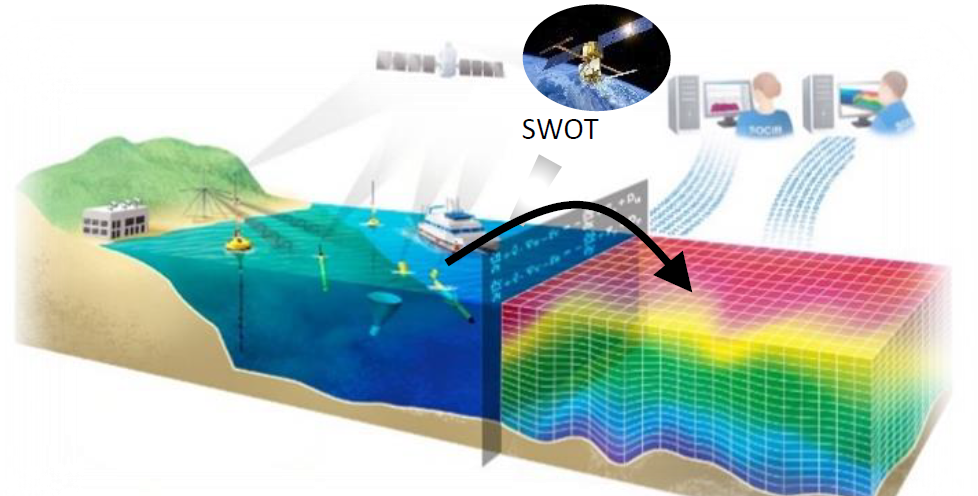
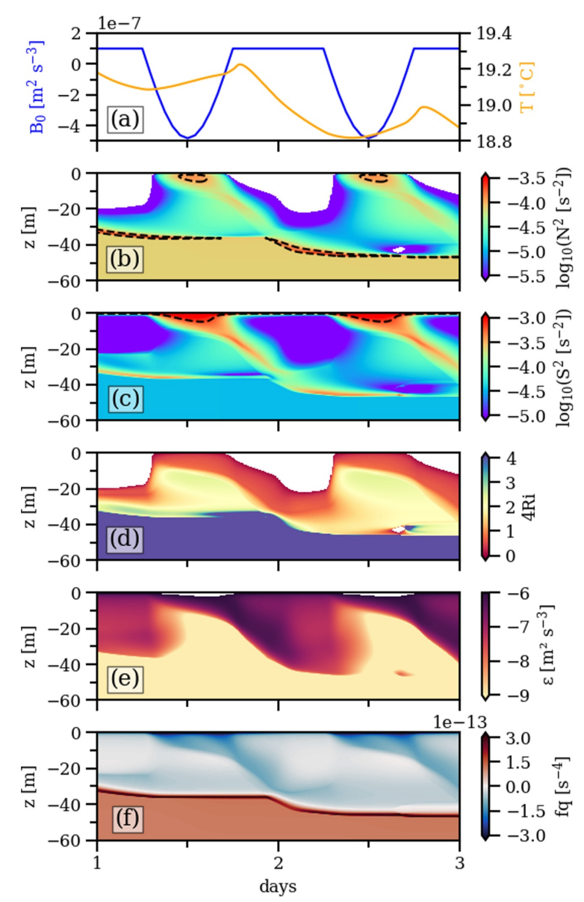

SWOT data assimlation modelling

Recent observations from the SWOT satellite and the FaSt-SWOT field campaign revealed a small intrathermocline anticyclonic eddy in the western Mediterranean Sea during April–May 2023. The eddy had a radius of about 25 km, extended from roughly 50 to 400 m depth, and produced sea surface height anomalies of approximately 3 cm. While SWOT clearly captured the eddy’s surface expression, its subsurface structure could not be resolved from satellite observations alone. To reconstruct the full three-dimensional structure, we assimilated SWOT sea surface height together with glider and CTD observations into a high-resolution regional ocean model. This work will be presented orally at the Ocean Science Meeting 2026 in Glawsgow, UK.
Surface-layer front under cross-front winds

While the effect of wind stress aligned with frontal jets has been extensively studied, focusing on an adequate understanding of the role of -front winds is largely lacking at the moment. This study investigates the effects of cross-front winds on a submesoscale dense filament in the central Baltic Sea using high-resolution turbulence and velocity observations, supplemented by idealized numerical simulations. This work, conducted in collaboration with IOW and Hereon (Germany), will be submitted to the Journal of Physical Oceanography.
Interaction between diurnal warm layers and surface-front

Previous studies have highlighted the individual importance of diurnal warm layers (DWLs) and surface-layer fronts within the surface boundary layer (SBL) in regulating energy, momentum, and gas exchange between the atmosphere and the ocean. This study, for the first time, investigates the interactions between DWLs and surface-layer fronts using field observations and numerical turbulence models. This work is a collaborative effort between the University of Western Australia, the Leibniz Institute for Baltic Sea Research (IOW), the University of New South Wales, and the Australian National University.
Surface-layer front under diurnal effects

Recent high-resolution numerical simulations have shown that the diurnal variability in the atmospheric forcing strongly affects the dynamics, stability, and turbulence of submesoscale structures in the surface boundary layer (SBL). Field observations supporting the real-ocean relevance of these studies are, however, largely lacking at the moment. Here, the impact of large diurnal variations in the surface heat flux on a dense submesoscale upwelling filament in the Benguela upwelling system is investigated, based on a combination of densely spaced turbulence microstructure observations and surface drifter data. This work is part of the large-scale interdiscplinary TRR181 project, focusing on energy transfer between atmosphere and ocean.
Surface-layer fronts under downfront winds and cooling

Based on high-resolution turbulence microstructure and near-surface velocity data, frontal instability and its relation to turbulence are investigated inside a transient upwelling filament in the Benguela upwelling system (southeast Atlantic). The focus of our study is a sharp submesoscale front located at the edge of the filament, characterized by persistent downfront winds, a strong frontal jet, and vigorous turbulence. Our data provide direct evidence for the relevance of FSI, inertial instability, and marginal shear instability for overall kinetic energy dissipation in submesoscale fronts and filaments. This work is part of the large-scale interdiscplinary TRR181 project, focusing on energy transfer between atmosphere and ocean.
Typhoon-induced coastal SST drop

SST drops of a few degrees in the open ocean after typhoon passages have been widely documented; however, few studies have focused on coastal SST variability. Significant SST drop phenomena were observed at the Longdong Buoy in northeastern Taiwan during 43 typhoons over the past 20 years (1998–2017). The mean SST drop (ΔSST) after a typhoon passage was 6.1 ∘C, and the maximum drop was 12.5 ∘C (Typhoon Fungwong in 2008). In this study, it was determined that cold water mainly intruded from the Kuroshio subsurface into the Okinawa Trough, which is approximately 50 km from the observation site. The magnitude of coastal SST drops depends on the area of overlap between typhoons generating strong winds and the Kuroshio. The dataset used in this study can be accessed from https://doi.org/10.1594/PANGAEA.895002.
Prediction of coastal freak waves

The potential for coastal freak waves (CFWs) represents a threat to people living in coastal areas. CFWs are generated via the evolution of a wave and its interactions with coastal structures or rocks; however, the exact mechanism of their formation is not clear. Here, a data-driven warning model based on an artificial neural network (ANN) is proposed to predict the possibility of CFW occurrence, with seven parameters (significant wave height, peak period, wind speed, wave groupiness factor, Benjamin Feir Index (BFI), kurtosis, and wind-wave direction misalignment) collected prior to the occurrence of the CFW are used to develop the model. Two validations using media-published and camera-recorded CFW events show that the accuracy rate (ACR) exceeds 90% and the recall rate (RCR) exceeds 87%, demonstrating the accuracy of the proposed model. This warning model has been implemented in operational runs since 2016.